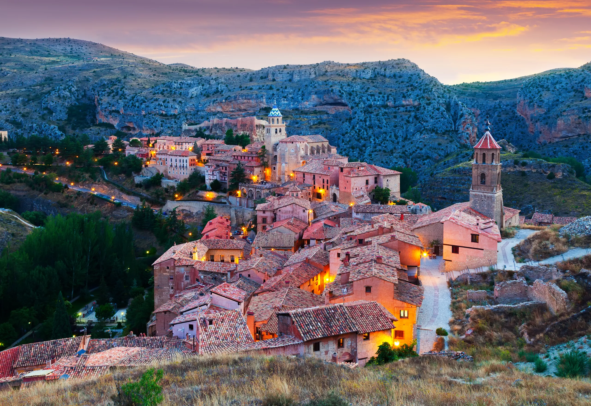
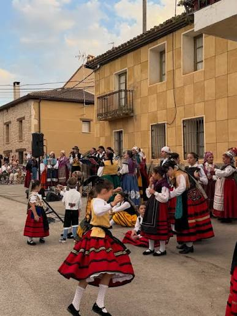
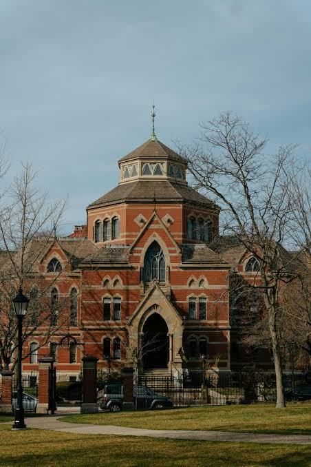
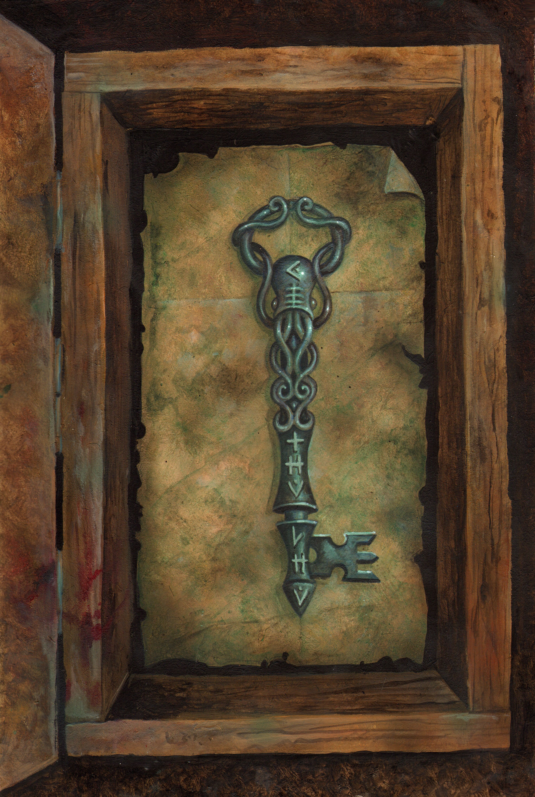
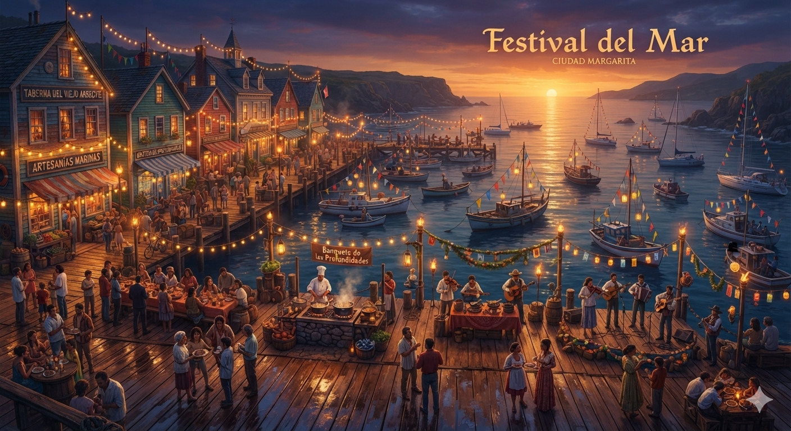
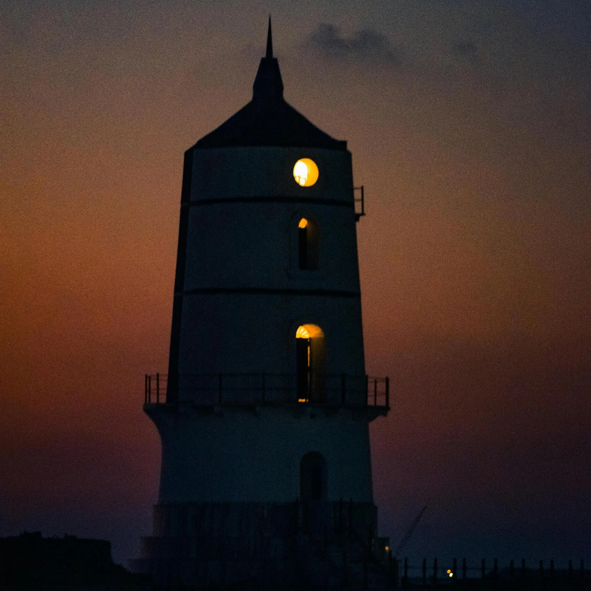

Pueblo de Arkham
📍 Ubicación: Zona Noroeste de Ciudad Margarita


Situado en la zona noroeste, el Pueblo de Arkham nos ofrece un verdadero viaje en el tiempo que atrapa a los visitantes gracias a sus interesantes casas y callejones de piedra, con un llamativo estilo antiguo y mítico. Este rincón histórico representa uno de los pilares culturales más importantes de la región; cada cuatro meses, sus calles se transforman en el escenario de festivales comunitarios destinados a mantener las tradiciones locales a través de la gastronomía y la venta de artilugios medievales únicos, ideal para aquellos que les apasiona las reliquias antiguas. El principal motivo para visitarlo es presenciar su baile cultural más emblemático: la "Danza de Erich Zann", un espectáculo musical tradicional del cual vas a poder disfrutar y participar, siendo guiado por la gente local. Esta danza cultural es muy importante para Arkham debido a que se comenta que posee la habilidad de ahuyentar las malas energías, atrayendo bienestar, felicidad y paz a todos aquellos que presencien o participen de la actividad.
Museo de Dunwich
📍 Ubicación: Zona Noroeste de Ciudad Margarita


En el centro de la ciudad se encuentra el imponente museo de Dunwich, un complejo arquitectónico de estilo gótico que se ha convertido en un atractivo turístico indispensable debido a su aura mística y su patrimonio histórico. Los viajeros eligen este destino para recorrer sus famosos jardines, repletos de misteriosas estatuas de piedra cuyos rostros parecen cambiar según desde que ángulos sean vistos, así como para explorar su valiosa colección de libros antiguos y totems únicos. Sin duda, la gran atracción del museo es "La Llave de Plata", una reliquia histórica perteneciente a los primeros exploradores de la región; la leyenda local asegura que quienes la observan con atención logran recuperar la inspiración y los sueños perdidos de la infancia. Se recomienda planificar la visita durante las "Noches de Astronomía y Letras", un evento mensual donde se realizan observaciones con telescopios antiguos en las torres y se relatan mitos locales a la luz de las velas, es una experiencia sumamente interesante debido al ambiente que genera el museo y las diversas antigüedades dentro del mismo.
Puerto de Innsmouth
📍 Ubicación: Extremo Este de Ciudad Margarita (Zona Costera)


Hacia el extremo este de Margarita se despliega el Puerto de Innsmouth, un cautivador barrio marítimo cuyas coloridas formas de madera y muelles tradicionales ofrecen una cálida bienvenida a los amantes del océano. Este sector es un paraíso para el entretenimiento y el descanso, donde los turistas pueden recorrer la feria artesanal de la costanera, famosa por su hermosa joyería hecha de un extraño y brillante oro local o alquilar barcas para explorar la orilla. No obstante, la actividad estrella es el tour embarcado hacia el majestuoso Mar de Yuggoth, una reserva natural reconocida por sus paisajes de acantilados e imponentes escenarios, ideal para el avistamiento de fauna marina. Para mejorar la experiencia, se sugiere asistir al "Festival del Mar" durante la temporada de verano. Este festival se celebra todos los años a mediados del verano y transforma por completo los muelles, que se vuelven peatonales y se llenan de adornos, luces flotantes y puestos con la mejor gastronomía local. Durante tres días se pueden ver espectaculares competiciones de veleros, desfiles de barcos pesqueros decorados con antorchas al atardecer y música náutica en vivo al aire libre. La gran atracción del evento es el famoso "Banquete de las Profundidades", una comida comunitaria donde los chefs locales cocinan de forma gratuita para todos los asistentes. Es la oportunidad ideal para disfrutar frente al mar, interactuar con los habitantes del puerto y conocer de cerca su cultura marinera.
El Faro de Ragnar
📍 Ubicación: Extremo Norte de Ciudad Margarita (Zona Costera)

Hacia el extremo Norte de Margarita se alza El Faro de Ragnar, una antigua contruccion de El Faro de Ragnar, una antigua construcción de piedra del año 1505 ,de aspecto imponente y desgastado por el paso del tiempo y la fuerza del océano. Su enorme torre blanca está coronada por una luz que, durante las noches, ilumina las aguas y sirve como guía para los barcos que se acercan a la costa. Su colosal estructura, que una vez guió a los marineros a través de las traicioneras aguas del océano guarda muchos misterios. Los habitantes de la ciudad cuentan que, en las noches de niebla, la luz del faro parece comportarse de manera extraña y puede verse incluso desde lugares muy alejados. El faro está rodeado de acantilados, senderos y una extensa vista del océano, convirtiéndolo en uno de los lugares más misteriosos y visitados de Ciudad Margarita. Según antiguas leyendas, Ragnar fue el nombre del primer guardián del faro, quien desapareció una noche sin dejar ningún rastro. Hoy, el Faro de Ragnar es considerado uno de los símbolos de la ciudad y un lugar ideal para quienes buscan disfrutar del paisaje,contemplar el océano y descubrir los misterios que se esconden entre sus antiguos muros.